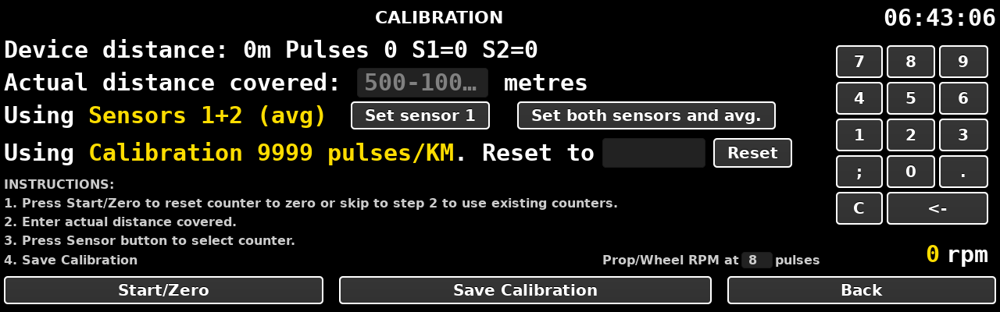

Start/Zero to zero the counters.Set sensor 1 or Set both sensors and avg. to
choose which counter is used. This will remain displayed in yellow.Save Calibration.The saved calibration will be displayed in yellow, for example Calibration 9999 pulses/KM.
Where the calibration is incorrect it can be adjusted directly by entering a
new pulses per kilometre figure into the Reset to box and pressing
Reset. No driving is needed. A figure of zero or less is ignored.
It is not necessary to press Save Calibration.
The reading under the keypad is the propshaft or wheel speed in revolutions per minute, taken from sensor 1. For it to be correct, type the number of pulses the sensor gives per revolution into the box ahead of the rpm reading.
Back returns to the main screen.